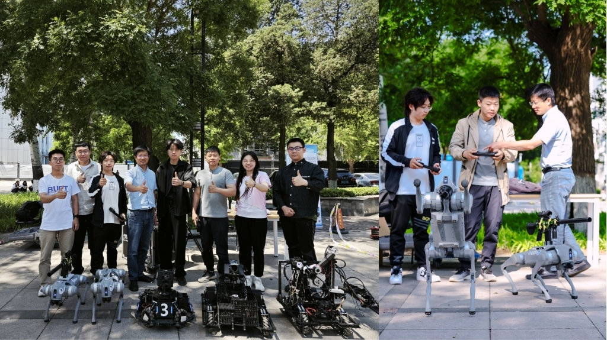
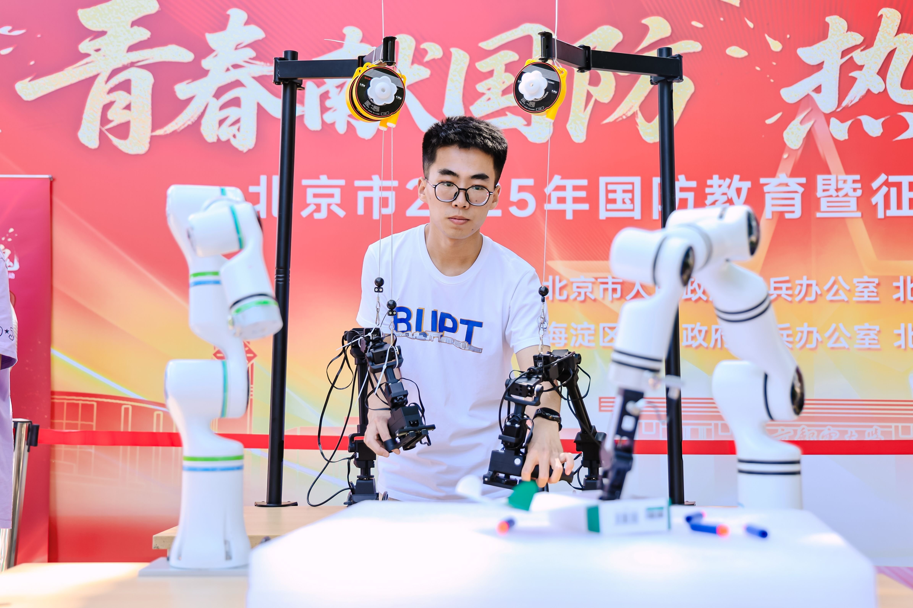
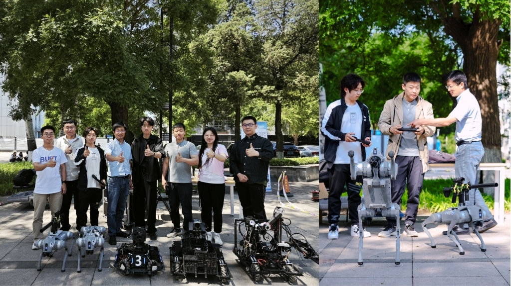
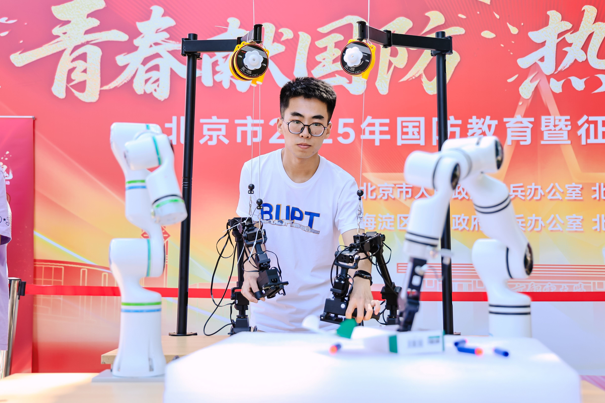
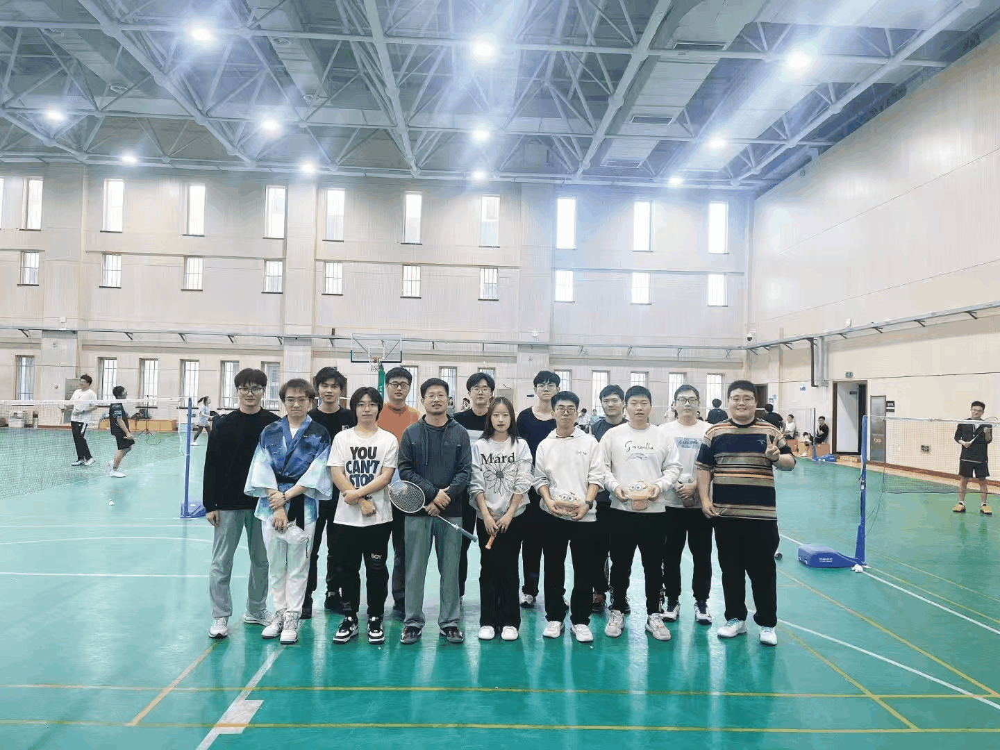
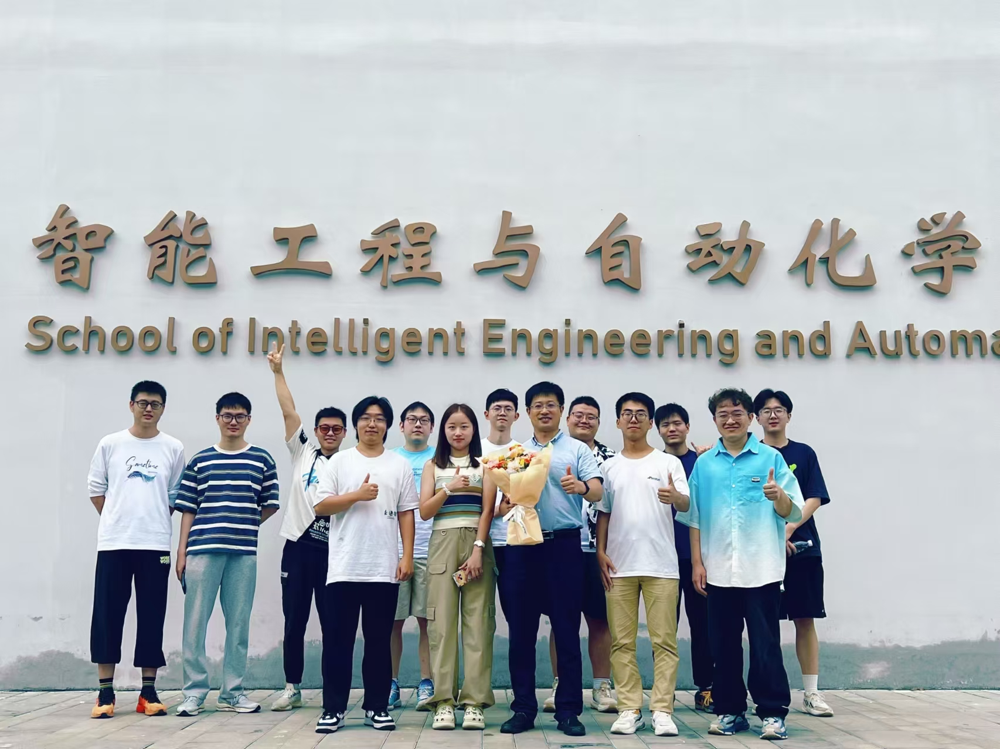
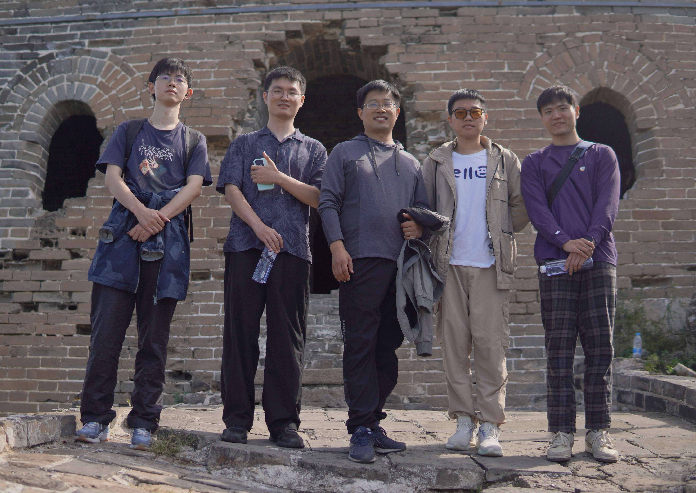
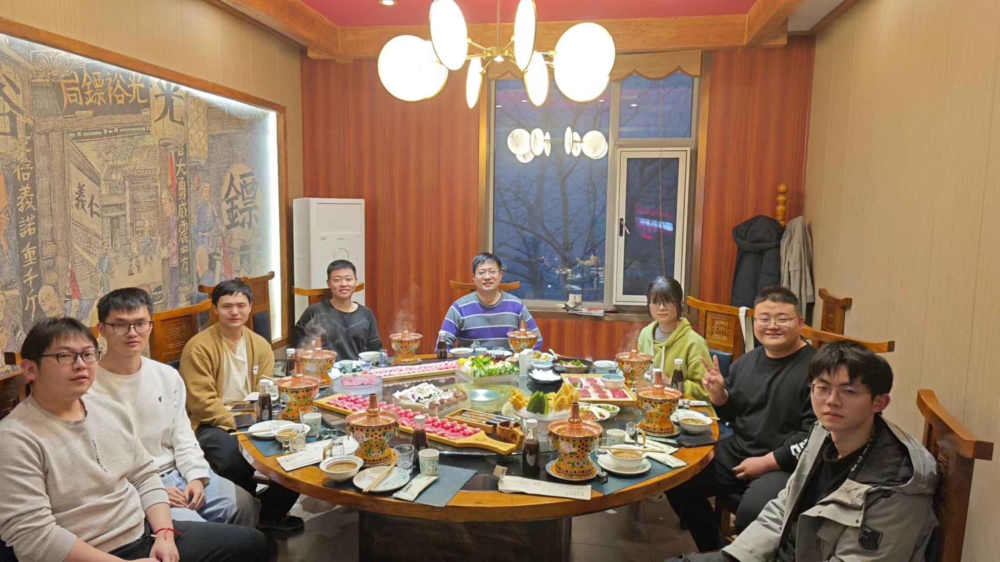
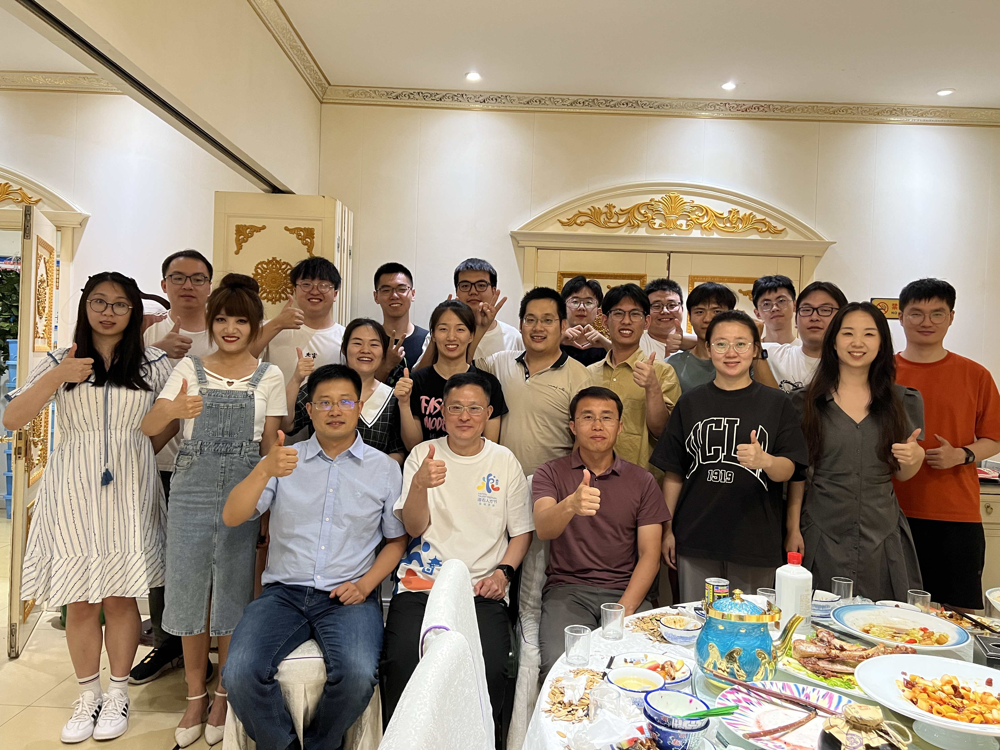

课题组参展北京市国防教育展
by Admin | May 24, 2025 | Uncategorized
 课题组在北京市国防教育展上展示了双臂作业和四足机器人等项目。

by Admin | May 24, 2025 | Uncategorized
 课题组在北京市国防教育展上展示了双臂作业和四足机器人等项目。
by Admin | Jan. 18, 2025 | Uncategorized
课题组在春节前组织了羽毛球活动、聚餐和聚会，增进了团队成员之间的交流与合作。
by Admin | Sep 2024 | Uncategorized
课题组在新学期开始时拍摄了合影，记录了团队成员的风采。
by Admin | September 2023 | Uncategorized
课题组在古北水镇进行了秋季新学期的团队建设活动，第一波成功登上长城顶。
by Admin | Feb 2024 | Uncategorized
课题组在春季新学期开始时组织了聚会，为新学期的工作和学习加油鼓劲。
by Admin | June 2023 | Uncategorized

课题组为毕业生举办了Farewell dinner，庆祝他们的毕业并祝福他们在未来的职业生涯中取得成功。